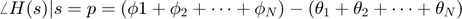
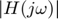
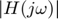

Práctica 10: Respuesta en frecuencia, simulación en MATLAB
- Moreno Castro José Pablo
- Pedraza Ocampo Eduardo
- Portillo Martínez Carolina
- Reyes Alvarez Angel
Contents
Introducción
En esta sección, exploramos la fuerte dependencia de la respuesta en frecuencia en la ubicación de polos y ceros de H(s). Esta dependencia señala un procedimiento intuitivo simple para el diseño de filtros.
4.10-1 Dependencia de la Respuesta en Frecuencia en Polos y Ceros de H(s)
La respuesta en frecuencia de un sistema proporciona información sobre la capacidad de filtrado del sistema. La función de transferencia del sistema se puede expresar como:
donde , , ..., son ceros y , , ..., son los polos de H(s). La respuesta de la función de transferencia H(s) en una frecuencia s = p es:
Esta ecuación incluye factores de la forma  y , que se representan como vectores en el plano complejo. La magnitud de estos vectores y sus ángulos se utilizan para calcular
y , que se representan como vectores en el plano complejo. La magnitud de estos vectores y sus ángulos se utilizan para calcular  y
y
Por lo tanto,
y

Usando este procedimiento, se puede determinar para cualquier valor de s. Para calcular la respuesta en frecuencia , se utiliza se conectan todos los polos y ceros a  y se determinan  y
y se determinan  y  utilizando las ecuaciones anteriores.
utilizando las ecuaciones anteriores.
Mejora de Ganancia por un Polo
Para comprender el efecto de los polos y ceros en la respuesta en frecuencia, se considera un caso hipotético de un solo polo . La respuesta en amplitud para un valor específico de está relacionada con la distancia d desde el polo hasta

A medida que aumenta desde cero, d disminuye progresivamente hasta que alcanza el valor . Después de d aumenta progresivamente. Por lo tanto, la respuesta en amplitud aumenta desde  hasta y disminuye continuamente a medida que aumenta más allá de Esto resulta en un comportamiento selectivo en frecuencia que aumenta la ganancia en la frecuencia (resonancia). La resonancia se vuelve más pronunciada a medida que el polo se acerca al eje imaginario.
hasta y disminuye continuamente a medida que aumenta más allá de Esto resulta en un comportamiento selectivo en frecuencia que aumenta la ganancia en la frecuencia (resonancia). La resonancia se vuelve más pronunciada a medida que el polo se acerca al eje imaginario.
Supresión de Ganancia por un Cero
Zeros en tienen el efecto opuesto de suprimir la ganancia en la cercanía de . Un cero en el eje imaginario en suprimirá totalmente la ganancia en la frecuencia Zeros repetidos intensificarán este efecto. Una combinación cercana de un polo y un cero tenderá a cancelar sus efectos mutuos en la respuesta en frecuencia. Estos conceptos se utilizan para diseñar filtros pasa bajos, pasa altos, pasa banda y rechaza banda.
4.10-2 Filtros Pasa Bajos
Un filtro pasa bajos típico tiene una ganancia máxima en . Para lograr esto, se coloca un polo (o polos) en el eje real opuesto al origen . La función de transferencia para este sistema es:
Donde es la frecuencia de corte. Para obtener una respuesta ideal, se necesitaría una "pared" infinita de polos en el eje imaginario opuesto al intervalo de frecuencia de 0 a
4.10-3 Filtros Pasa Banda
En un filtro pasa banda, la ganancia se incrementa sobre toda la banda de paso. Esto se logra colocando una "pared" de polos opuestos al eje imaginario frente a la banda de paso centrada en . Se requeriría un número infinito de polos para lograr una respuesta ideal. En la práctica, se utilizan un número finito de polos para comprometerse entre características ideales y practicidad.
4.10-4 Filtros Elimina Bandas Una respuesta de amplitud ideal de un filtro elimina bandas es un complemento de la respuesta de amplitud de un filtro pasa banda ideal. Su ganancia es cero sobre una banda pequeña centrada en una frecuencia y es unidad sobre las frecuencias restantes. Para valores grandes de el producto de las distancias de polos de será igual al producto de ceros de Además,la ganancia de unidad en requiere que un polo y el cero correspondiente sean equidistantes del origen. Por ejemplo, si usamos 2 ceros (complejos-conjugados) debemos tener 2 polos; la distancia del origen de los polos y de los ceros debería ser la misma.
4.10-5 Filtros Prácticos y sus especificaciones Para filtros ideales, las ganancias son cero o unidad sobre ciertas bandas. En la práctica, vemos una variedad de características de filtros que solo se aproximan a las características ideales.
Un filtro ideal tiene un pasa banda (unidad de ganancia) y un elimina banda (ganancia cero) con una transición repentina de la pasa banda a elimina banda. No hay una banda de transición. Para filtros prácticos, la transición de pasa banda a elimina banda (o viceversa) es gradual y toma lugar sobre una banda de frecuencias finitas. Además, la ganancia no puede ser de cero sobre una banda finita. Como resultado no puede haber una elimina banda verdadera para filtros prácticos. Por tanto, definimos una elimina banda para que sea una banda sobre la cual la ganancia esta entre 1 y algún número .
En un procedimiento de diseño típico, (Ganancia mínima de pasa banda) y (máxima ganancia de pasabanda) son especificados.Los filtros elimina bandas, pasa banda y paso alto pueden ser obtenidos de un filtro paso bajo por transformaciones simples de frecuencia
Problema 2.
Consideremos el siguiente sistema
2a. Muestra que 
Para mostrar que cuando , sustituimos en la función de transferencia
Ahora, evaluamos la magnitud de cuando
Simplificamos la expresion:

Por lo tanto, hemos demostrado que cuando . Esto significa que la magnitud de la funcion de transferencia en la frecuencia cero es igual a 1
2b. Muestra que si se tiene una ganancia de entonces
Para demostrar que si se tiene una ganancia de -3 dB entonces para el sistema  partimos de la definición de ganancia en decibelios (dB):
partimos de la definición de ganancia en decibelios (dB):
Cuando la ganancia es -3 dB, tenemos:
Dividimos ambos lados por 20:

Elevamos ambos lados a la base 10:

$|G(j\omega)| = 0.707 $
Ahora, sustituimos esto en la función de transferencia:

Multiplicamos ambos lados por

Elevamos ambos lados al cuadrado:
Restamos de ambos lados:
Finalmente, tomamos la raíz cuadrada:
Por lo tanto, hemos demostrado que si la ganancia es -3 dB, entonces para el sistema dado.
2c. Para modificar el comportamiento del sistema, se realiza una retroalimentación negativa con  . ¿Para qué valor de se tiene una ganancia de ?, ¿Qué concluye?
. ¿Para qué valor de se tiene una ganancia de ?, ¿Qué concluye?
Cuando se aplica retroalimentación negativa a un sistema mediante un control proporcional k la nueva función de transferencia del sistema se puede expresar como:
Dado que inicialmente teníamos la nueva función de transferencia con retroalimentación negativa sería:

Simplificamos esta expresión:
Para encontrar la frecuencia en la cual la ganancia es -3 dB, usamos la misma lógica que antes. La ganancia en decibelios está dada por:
Cuando , tenemos:
Dividimos ambos lados por 20:
Elevamos ambos lados a la base 10:

Sustituimos en la función de transferencia con retroalimentación negativa:
Multiplicamos ambos lados por
Elevamos ambos lados al cuadrado:
Resolvemos para
En conclusion la retroalimentación negativa ha alterado el comportamiento del sistema y ha cambiado la frecuencia a la cual se alcanza la ganancia de -3 dB. La elección de la solución dependerá de la configuración específica del sistema y de las condiciones iniciales.
Dado que inicialmente teníamos la nueva función de transferencia con retroalimentación negativa sería:
Simplificamos esta expresión:
Para encontrar la frecuencia en la cual la ganancia es -3 dB utilizamos la misma lógica que antes. La ganancia en decibelios está dada por:
Cuando , tenemos:
Dividimos ambos lados por 20:
Elevamos ambos lados a la base 10:
Sustituimos en la función de transferencia con retroalimentación negativa:

Multiplicamos ambos lados por  :
:

Elevamos ambos lados al cuadrado:
Resolvemos para :
Problema 5
Se tiene el siguiente sistema
5a. ¿El sistema es BIBO estable?
El polo está en s=-5 (parte real negativa) por lo tanto es BIBO estable
5b. Encuentre la respuesta (analítica) para condiciones iniciales cero del sistema si  \therefore , recuerde aplicar el resultado de convolución si es necesario. usamos Laplace
\therefore , recuerde aplicar el resultado de convolución si es necesario. usamos Laplace
como x(0) = 0, simplificamos:
Resolvemos para x(s)
Resolvemos para A, B y C y obtenemos
, ,
En el dominio de Laplace:
Problema 6
Práctica 7: Series de Fourier en tiempo continuo
%* Moreno Castro José Pablo %* Pedraza Ocampo Eduardo %* Portillo Martínez Carolina %* Reyes Alvarez Angelinvestigue la instrucción linearSystemAnalyzer (disposible a partir de 2015a) y con ayuda de esta, reporte las gráficas de % 6a. Respuesta al Impulso % % 6b. Respuesta al escalón % % 6c. Respuesta a $x(t)=cos(2t)u(t)$ % % 6d. Graficas de Bode % Para condiciones iniciales cero y 10 segundos de simulación, para el sistema. % % $$\ddot{y}+3\dot{y}+2y=x$$ % % La función linearSystemAnalyzer proporciona una interfaz gráfica para el análisis % y la visualización de sistemas lineales.Se puede utilizar esta herramienta % para analizar la respuesta de un sistema a diferentes entradas y examinar sus características % como la respuesta al escalón, la respuesta al impulso, el diagrama de Bode, el diagrama de Nyquist, entre otros. % La sintaxis básica de la función es: % % linearSystemAnalyzer(sys) % % donde sys es el modelo del sistema que se desea analizar % Puede ser de espacio de estados, transferencia, o cualquier otro tipo compatible con el análisis de sistemas lineales en MATLAB. % Al utilizar linearSystemAnalyzer, se abrirá una interfaz gráfica que % permite seleccionar y visualizar diferentes tipos de respuestas del sistema % Se puedes agregar varias respuestas a la vez y compararlas en la misma ventana. % % Definición del sistema numerador = 1; denominador = [1, 3, 2]; system = tf(numerador, denominador); % Condiciones iniciales y tiempo de simulación Condiciones_iniciales = [0; 0]; Tiempo_de_simulacion = 10; % 6a. Respuesta al Impulso t_impulso = 0:0.01:Tiempo_de_simulacion; respuesta_impulso = impulse(system, t_impulso); figure; plot(t_impulso, respuesta_impulso); title('Respuesta al Impulso'); xlabel('Tiempo'); ylabel('Amplitud'); % 6b. Respuesta al escalón t_step = 0:0.01:Tiempo_de_simulacion; Respuesta_escalon = step(system, t_step); figure; plot(t_step, Respuesta_escalon); title('Respuesta al Escalón'); xlabel('Tiempo'); ylabel('Amplitud'); % 6c. Respuesta a x(t) = cos(2t)u(t) t_coseno = 0:0.01:Tiempo_de_simulacion; u_coseno = cos(2 * t_coseno) .* (t_coseno >= 0); % u(t) = 1 para t >= 0 lsim_resp = lsim(system, u_coseno, t_coseno, Condiciones_iniciales); figure; plot(t_coseno, lsim_resp); title('Respuesta a x(t) = cos(2t)u(t)'); xlabel('Tiempo'); ylabel('Amplitud'); % 6d. Gráficas de Bode figure; bode(system); title('Gráficas de Bode'); %